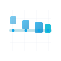
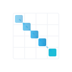

🎨 TimeTiles Logo Variants
Complete exploration of Time + Tiles + Space concepts (v3) — 24 variants
Time-Focused
Emphasizing temporal elements: timelines, chronological flow, progress, milestones
Progress Bar
Timeline with milestones
Minimal
Gantt Bars
Project timeline style
Clean
Arrow Flow
Directional time progression
Minimal

Timeline Tiles
Growing tiles on timeline
Minimal

Stacked Time
Layered time periods
Minimal

Vertical Timeline
Vertical chronology with tiles
Clean

Radial Time
Concentric time rings
Moderate
Space/Map-Focused
Emphasizing geographic and spatial elements: coordinates, locations, quadrants, pins
Map Pin Grid
Location markers on grid
Clean

Coordinates
Cartesian coordinate system
Minimal

Quadrants
Geographic tile divisions
Clean

Clock Tiles
Radial spatial arrangement
Minimal
Grid/Tiles-Focused
Emphasizing modular tiling: clean grids, data blocks, tessellation, organization
Pure Grid
4×4 clean grid structure
Moderate
Modular Blocks
Varying block sizes
Clean
Tessellation
Repeating tile pattern
Moderate

Grid Flow
Diagonal arrangement
Minimal

Stepped Grid
Columnar progression
Clean
Hybrid Approaches
Combining time, space, and tiles concepts into integrated designs

Time-Map
Timeline over coordinate grid
Clean

Grid Timeline
Diagonal time through grid
Clean

Timeline Grid
Vertical tiles on timeline
Clean

Cascading Tiles
Flowing rows through time
Clean

Wave Rhythm
Temporal wave pattern
Clean

Timeline Mosaic
Clustered tiles on timeline
Moderate

Layered Grid
Time layers with grid
Moderate

Flowing Tiles
Tiles along curved flows
Moderate
Dark Background Test
Selected variants shown on dark backgrounds to test versatility
Progress Bar
Coordinates
Modular Blocks
Time-Map
Stacked Time
Timeline Grid